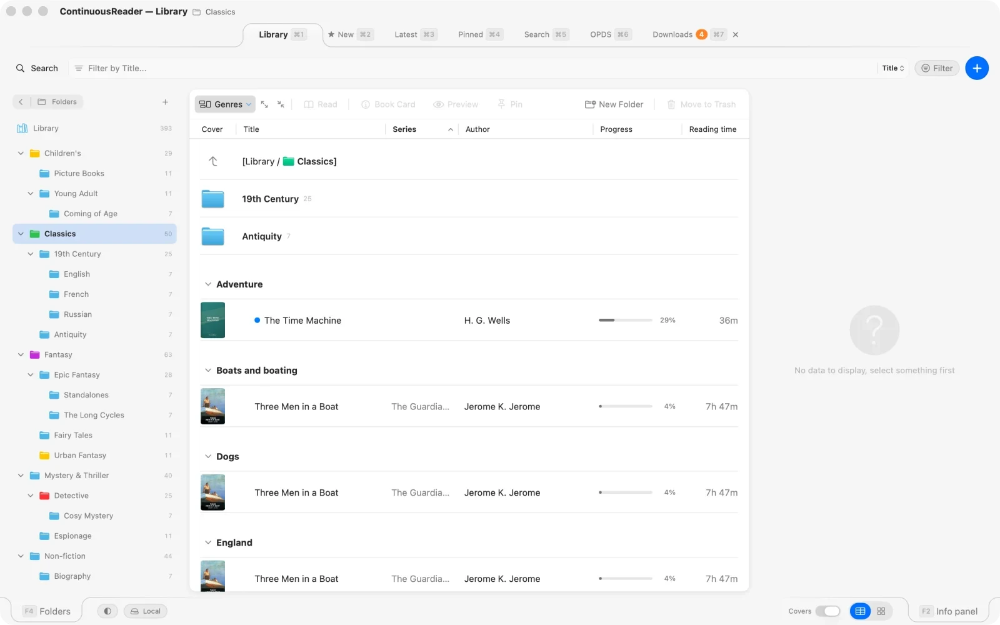
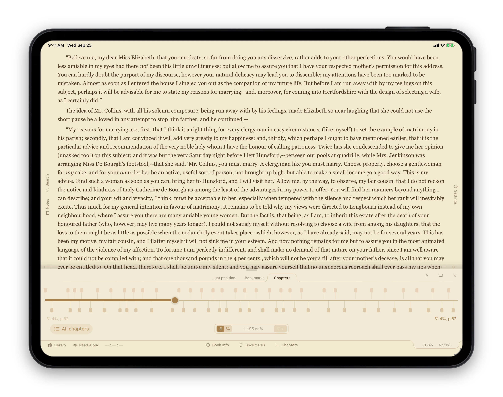
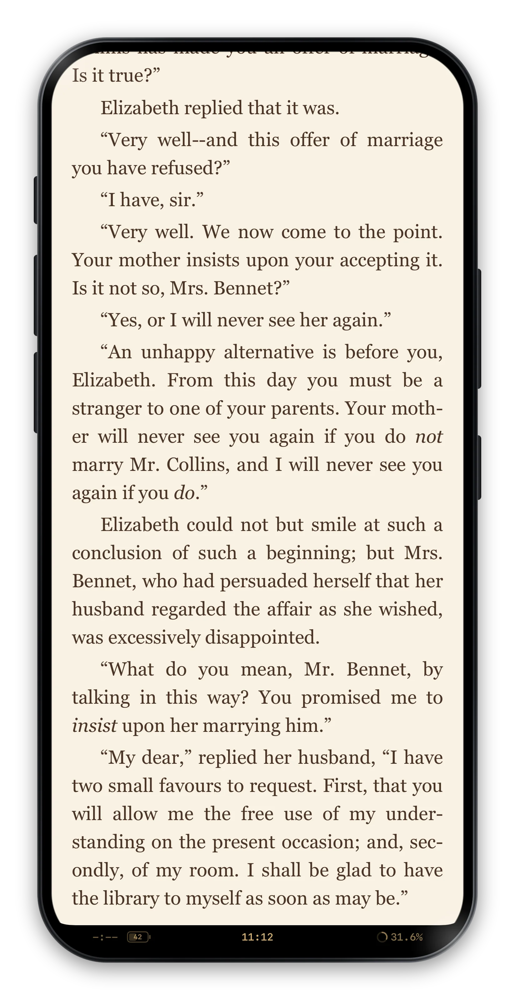

One app across Mac, iPad, and iPhone — adapted to each device’s way of working, not mediocre on all three.
Cross-platform apps usually land in one of two places. Either they look the same everywhere — which means they look wrong somewhere. Or they’re three separate apps held together by the same name and a cloud icon.
ContinuousReader is neither. The reading engine, the library, the typography, the themes, translation, Read Aloud — one shared codebase, and it behaves the same on every device. What changes is how you reach it: keyboard and trackpad on the Mac, taps and swipes on the iPad, a single thumb on the iPhone — and two readers to choose from on all three, Comfort and Professional.
The Mac version takes everything the platform offers: a key for anything you do often, panels that dock to any edge, float as windows of their own or pin, the Book Card and the browsers — authors, series, notes, journal, statistics — in windows of their own, drag-and-drop just about everywhere, and an island design borrowed from Apple’s System Settings.
⌘B to bookmark, ⌘F to search, ⌘G for the progress drawer, F2–F4 for panels, Space for quick previewEsc opens the panel selector, a double F9 the settings navigatorThe version to use when you have a keyboard, a chair, and time.

The iPad sits between the Mac and the iPhone, and gets the best of both: with a keyboard attached it is the Mac’s reader — panels, docks, the same keys; put the keyboard away and it reads like the iPhone, full screen with active corners.
Esc, H for Quiet mode, the tab selector and the panel selector work as on the Mac
Same island design as the Mac, same fonts, same themes. The library looks like it belongs to the same app — because it does.
The iPhone version is streamlined, not stripped. Everything that earns its place on a small screen is here; the table view and the floating panels sit it out, because cramming them in would only make the app worse. In their place: full-screen reading with active corners, tiles instead of panels, native sheets — and the library’s tabs, browsers included, laid out for a phone.

Same reader, three platforms — how each feature is adapted to each.
| Mac | iPad | iPhone | |
|---|---|---|---|
| Library layout | Island design, resizable, hover effects | Island design, swipe actions | Compact list, swipe actions |
| View modes | Table, Cards | List, Cards | List, Cards |
| Folders | Nested sidebar tree (F4) | Nested sidebar tree | Bottom sheet |
| Info panel | Resizable side panel | Resizable side panel | Detail sheet |
| Reader side panel | Dock to any edge, float or pin | Dock to any edge, float or pin | Corner tiles and full-screen sheets |
| Themes | All 42 | All 42 | All 42 |
| Fonts | All 9 | All 9 | All 9 |
| Typography controls | Full | Full | Full |
| Settings | Six tabs (Reader Appearance) + ⌘, | Six tabs (Reader Appearance) | Settings sheet |
| Page modes | Scroll, Pages — up to 4 columns | Scroll, Pages — up to 3 columns in landscape | Scroll, Pages |
| Reading modes | Comfort, Professional | Comfort, Professional | Comfort, Professional |
| Fullscreen reading | Native macOS full screen | Centre tap | Always on |
| Full-screen bar, built slot by slot | — | ✓ | ✓ |
| Navigation | Keyboard + trackpad | Touch + swipes + keyboard | Corners, edge swipes, tap zones |
| OPDS | Library tab | Library tab | Library tab |
| Filters | Unified popover | Unified popover | Filter sheet |
| Library backup (copy the folder) | ✓ | — | — |
| Custom library location | ✓ | — | — |
| Drag URL from browser | ✓ | ✓ | — |
| Mass import | ✓ | — | — |
| Keyboard shortcuts | Full set | With a keyboard: the Mac’s | — |
Everything above is included in ContinuousReader for $19.99. Universal Purchase — buy once on any platform, install on all three, sync turned on.
Or start smaller: PlainReader at $6.99 keeps a shelf of books in coloured categories without a library to maintain, and JustReader is free for one book at a time. Same engine, same themes, same translation — all on three platforms.
Three apps. Read a book, fill a shelf, or grow a library.